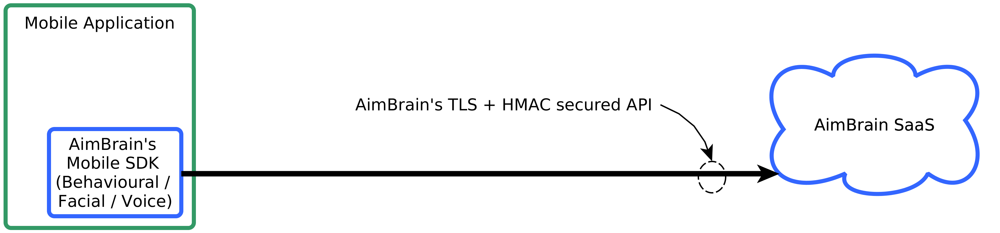

Introduction
Welcome to the AimBrain’s API spec.
Current API Version: API v1
Modules
AimBrain supports multiple biometric modalities (modules) as part of its authentication platform. These modules can be used together (e.g. to step-up the authentication on high risk actions) or separately, depending on the specific use-case. Because AimBrain offers a public API, any module can be used in a cross-channel context (e.g. same Voice Module with mobile banking application and customer call center).

At the core AimBrain uses advanced Deep Learning algorithms based on state of the art, PhD level, scientific research. The technology has multiple patents pending in UK and US.
Behavioural
With the behavioural modality AimBrain uses machine learning to track not what the user enters, but how they enter it. AimBrain monitors features such as touch pressure, typing speed, as well as movement.
The technology works in mobile applications and online websites.
Facial
The technology works in mobile applications and online websites.
Liveliness detection done via random-challenge request.
Voice
The technology is language agnostic and supports free speech as well as set-phrase authentication.
Liveliness detection done via spoken challenge-response token.
Works in mobile apps, online websites and call centres.
Security
AimBrain takes security very seriously. We adhere to the highest security industry standards and have daily penetration tests performed on the infrastructure and APIs.
API v1
All API requests use POST verb to prevent caching issues and request length limitations. Requests are passed in JSON format in the HTTP request body and MUST include the following header (alongside valid authentication headers):
Content-Type: application/json
Development Endpoint: https://api.aimbrain.com/
To offer lowest latency and thus best user experience to our clients we host our infrastructure in multiple regions. Please use a closest region to you when in production.
| Region Name | Region | Production Endpoint |
|---|---|---|
| US East (N. Virginia) | us-east-1 | https://api.us-east-1.aimbrain.com/ |
| US West (N. California) | us-west-1 | https://api.us-west-1.aimbrain.com/ |
| US West (Oregon) | us-west-2 | https://api.us-west-2.aimbrain.com/ |
| Asia Pacific (Mumbai) | ap-south-1 | https://api.ap-south-1.aimbrain.com/ |
| Asia Pacific (Seoul) | ap-northeast-2 | https://api.ap-northeast-2.aimbrain.com/ |
| Asia Pacific (Singapore) | ap-southeast-1 | https://api.ap-southeast-1.aimbrain.com/ |
| Asia Pacific (Sydney) | ap-southeast-2 | https://api.ap-southeast-2.aimbrain.com/ |
| Asia Pacific (Tokyo) | ap-northeast-1 | https://api.ap-northeast-1.aimbrain.com/ |
| EU (Frankfurt) | eu-central-1 | https://api.eu-central-1.aimbrain.com/ |
| EU (Ireland) | eu-west-1 | https://api.eu-west-1.aimbrain.com/ |
| South America (São Paulo) | sa-east-1 | https://api.sa-east-1.aimbrain.com/ |
Architecture
Architecture for Behavioural Pilots

Architecture for Facial / Voice Pilots and Production deployment
Authentication
To generate and run curl request using curl_hmac.py tool:
python2 curl_hmac.py test secret POST /v1/sessions\
'{"userId": "user", "device":"device", "system":"system"}'
and to read request body from file:
python2 curl_hmac.py test secret POST /v1/sessions \
-f "request_example_body.json"
Example output:
curl https://api.aimbrain.com:443/v1/sessions\
-H 'Content-Type: application/json'\
-H 'X-aimbrain-apikey: test'\
-H 'X-aimbrain-signature: uPVe74VR9ncmxltwNX69pe6amFTMbJGM0Y8dIGk8vSI='\
-d '{"userId": "user", "device":"device", "system":"system"}'
AimBrain uses API key pairs (API key and API secret) to allow access to the API. You can register a new API key by emailing us.
AimBrain expects for the API key and HMAC Signature to be included in all API requests to the server in the HTTP headers that look like the following:
X-aimbrain-apikey: api-key
X-aimbrain-signature: base64-hmac-signature
To make development, testing and debugging easier we provide a python tool for generating correctly signed and formed curl requests, as shown in the example.
Generating X-aimbrain-signature
Use base64 encoded HMAC SHA256 digest as the request signature:
X-aimbrain-signature = base64(HMAC_SHA256(secret, message)), where
secret is your API Secret, and
message = uppercase_http_method + '\n' + lovercase_endpoint + '\n' + request_body.
/v1/sessions
Download session_request_example_body.json and use:
python2 curl_hmac.py test secret POST /v1/sessions \
-f 'session_request_example_body.json' -r
Alternatively:
curl https://api.aimbrain.com:443/v1/sessions \
-H 'Content-Type: application/json' \
-H 'X-aimbrain-apikey: test' \
-H 'X-aimbrain-signature: E7vPXCNHsJQhadkTruAbCE+q9fCmRK9Gf+wtl2/3yrA=' \
--data @session_request_example_body.json
Example response:
{
"behaviour":0,
"face":0,
"session":"test-user-test-user-1234567890-1459141412877914289"
}
This endpoint creates a server-side session and returns unique session id to be used with further API requests.
HTTP Request
POST /v1/sessions
Body
| Parameter | Description |
|---|---|
userIdrequired |
string Random anonymous static ID used to identify app users. |
devicerequired |
string User’s device name used in the Behavioural Module and to calculate the precise accuracy by only testing between users with the same device. |
systemrequired |
string Operating system’s name and version used for tracking SDK’s usage statistics. |
screenHeightrequired |
integer User’s device screen height (px). |
screenWidthrequired |
integer User’s device screen width (px). |
HTTP Response
Status code: 200 OK
| Parameter | Description |
|---|---|
session |
string Generated session id for use with other API requests to maintain session semantics. |
face |
integer Status of the Facial Module for given user (see below). |
behaviour |
integer Status of the Facial Module for given user and device pair (see below). |
face parameter values:
| Value | Description |
|---|---|
0 |
User not enrolled - facial authentication not available, enrollment required. |
1 |
User enrolled - facial authentication available. |
2 |
Building template - enrollment done, AimBrain is building user template and no further action is required. |
behaviour parameter values:
| Value | Description |
|---|---|
0 |
User not enrolled - behavioural authentication not available, enrollment required. |
1 |
User enrolled - behavioural authentication available. |
Custom Errors
No custom errors. Please see #errors for description of standard errors.
/v1/behavioural
Download behavioural_request_example_body.json and use:
python2 curl_hmac.py test secret POST /v1/behavioural \
-f 'behavioural_request_example_body.json' -r
Alternatively:
curl https://api.aimbrain.com:443/v1/behavioural \
-H 'Content-Type: application/json' \
-H 'X-aimbrain-apikey: test' \
-H 'X-aimbrain-signature: TgDm+IwKlW3H3ILdB3ga0OOZGgZab4gM/9nW+X4NSHw=' \
--data @behavioural_request_example_body.json
Example response:
{
"status":0,
"score":0
}
This endpoint enrolls and authenticates users based on the Behavioural Module.
HTTP Request
POST /v1/behavioural
Body
| Parameter | Description |
|---|---|
sessionrequired |
string Current Session ID as returned by /v1/sessions request. |
touchesrequired |
array of objects List of touch events (see below). |
accelerationsrequired |
array of objects List of accelerometer events (see below). |
textEventsrequired |
array of objects List of text change / typing events (see below). |
touches object:
| Parameter | Description |
|---|---|
tidrequired |
integer Touch id as reported by the system (e.g. MotionEvent.getPointerId(int)) for Android |
prequired |
integer Phase or action for the touch event, where: 0 - Began, 1 - Moved, 2 - Stationary, 3 - Ended, 4 - Cancelled. |
trequired |
integer The the time (in ms) when this specific event was generated. |
xrequired |
integer Absolute X coordinate for the touch position (for elements tagged as sensitive MUST be reported as “0”). |
yrequired |
integer Absolute X coordinate for the touch position (for elements tagged as sensitive MUST be reported as “0”). |
rxrequired |
integer Relative X coordinate to the event element (e.g. button). |
ryrequired |
integer Relative Y coordinate to the event element (e.g. button). |
rrequired |
float Approximate size of touch area for the given touch id. |
frequired |
float Force of pressure of touch for the given event. |
idsrequired |
array of strings List of identifiers of views in the order that touch event is propagating (for elements tagged as sensitive it MUST be reported as a hash of element id + locally generated salt which never leaves the user’s device). |
accelerations object:
| Parameter | Description |
|---|---|
trequired |
integer The the time (in ms) when this specific event was generated. |
xrequired |
float Acceleration in X direction. |
yrequired |
float Acceleration in Y direction. |
zrequired |
float Acceleration in Z direction. |
textEvents object:
| Parameter | Description |
|---|---|
trequired |
integer The the time (in ms) when this specific event was generated. |
txrequired |
string Full text after the event / change. |
idsrequired |
array of strings List of identifiers of views in the order that touch event is propagating (for elements tagged as sensitive it MUST be reported as a hash of element id + locally generated salt which never leaves the user’s device). |
HTTP Response
Status code: 200 OK
| Parameter | Description |
|---|---|
score |
float Probability, expressed as float between (0..1), that the current user is the original / enrolled user (only if the current user is already enrolled). |
status |
integer Status of the Behavioural Module for given user (see below). |
status parameter values:
| Value | Description |
|---|---|
0 |
User not enrolled - behavioural authentication not available, enrollment required. |
1 |
User enrolled - behavioural authentication available. |
Custom Errors
No custom errors. Please see #errors for description of standard errors.
/v1/face/enroll
Download face_enroll_request_example_body.json and use:
python2 curl_hmac.py test secret POST /v1/face/enroll \
-f 'face_enroll_request_example_body.json' -r
Alternatively:
curl https://api.aimbrain.com:443/v1/face/enroll \
-H 'Content-Type: application/json' \
-H 'X-aimbrain-apikey: test' \
-H 'X-aimbrain-signature: VXNfJLbOntEVUlOp6UUwo8D4YyKjNtzspeBCOqZYM9A=' \
--data @face_enroll_request_example_body.json
Example response:
{
"imagesCount":2
}
This endpoint enrolls users based on the Facial Module.
HTTP Request
POST /v1/face/enroll
Body
| Parameter | Description |
|---|---|
sessionrequired |
string Current Session ID as returned by /v1/sessions request. |
facesrequired |
array of strings List of base64 encoded images or videos containing user face. H.264 encoded videos, JPEG and PNG formats supported. 640x480 maximum resolution, 500kB maximum size. In case of video, no longer than 3 seconds. |
HTTP Response
Status code: 200 OK
| Parameter | Description |
|---|---|
imagesCount |
integer Number of images accepted for enrollment. |
Custom Errors
| Code | Meaning | Action |
|---|---|---|
| 422 | Well formed request received, but images were not accepted (reason specified in error field) |
Capture a NEW set of images and try again |
Please also see #errors for description of standard errors.
/v1/face/auth
Download face_auth_request_example_body.json and use:
python2 curl_hmac.py test secret POST /v1/face/auth \
-f 'face_auth_request_example_body.json' -r
Alternatively:
curl https://api.aimbrain.com:443/v1/face/auth \
-H 'Content-Type: application/json' \
-H 'X-aimbrain-apikey: test' \
-H 'X-aimbrain-signature: dBxk9M++dNhI7pk+tXvAVaUwlWuOPl8S4wlmrhKhSqs=' \
--data @face_auth_request_example_body.json
Example response:
{
"score":0.95256084,
"liveliness":0.05330102
}
This endpoint authenticates users based on the Facial Module.
HTTP Request
POST /v1/face/auth
Body
| Parameter | Description |
|---|---|
sessionrequired |
string Current Session ID as returned by /v1/sessions request. |
facesrequired |
array of strings List of base64 encoded images or videos containing user face. H.264 encoded videos, JPEG and PNG formats supported. 640x480 maximum resolution, 500kB maximum size. In case of video, no longer than 3 seconds. |
HTTP Response
Status code: 200 OK
| Parameter | Description |
|---|---|
score |
float Probability, expressed as float between (0..1), that the current user is the original / enrolled user. |
liveliness |
float Probability, expressed as float between (0..1), that the received video in faces array represent a live person as opposed being still image. In case of images are sent in faces, 0.0 is returned. |
Custom Errors
| Code | Meaning | Action |
|---|---|---|
| 422 | Well formed request received, but images were not accepted (reason specified in error field) |
Capture a NEW set of images and try again |
| 424 | Well formed request received, but we could not find an enrolled user with the supplied id | Confirm if enrollnment was done for the specific user |
Please also see #errors for description of standard errors.
/v1/face/compare
Download face_compare_request_example_body.json and use:
python2 curl_hmac.py test secret POST /v1/face/compare \
-f 'face_compare_request_example_body.json' -r
Alternatively:
curl https://api.aimbrain.com:443/v1/face/compare \
-H 'Content-Type: application/json' \
-H 'X-aimbrain-apikey: test' \
-H 'X-aimbrain-signature: NwMmSbjqwsq7Y4x4Src7qHnIFerMhUTWcFxqLuAbbwg=' \
--data @face_compare_request_example_body.json
Example response:
{
"score":0.95256084,
"liveliness1":0.05330102,
"liveliness2":0.81412222
}
This endpoint compares two faces based on the Facial Module.
HTTP Request
POST /v1/face/compare
Body
| Parameter | Description |
|---|---|
faces1required |
array of strings List of base64 encoded images or videos containing user face. H.264 encoded videos, JPEG and PNG formats supported. 640x480 maximum resolution, 500kB maximum size. In case of video, no longer than 3 seconds. |
faces2required |
array of strings List of base64 encoded images or videos containing user face. H.264 encoded videos, JPEG and PNG formats supported. 640x480 maximum resolution, 500kB maximum size. In case of video, no longer than 3 seconds. |
HTTP Response
Status code: 200 OK
| Parameter | Description |
|---|---|
score |
float Probability, expressed as float between (0..1), that the current user is the original / enrolled user. |
liveliness1 |
float Probability, expressed as float between (0..1), that the received video in faces1 array represent a live person as opposed being still image. In case of images are sent in faces1, 0.0 is returned. |
liveliness2 |
float Probability, expressed as float between (0..1), that the received video in faces2 array represent a live person as opposed being still image. In case of images are sent in faces2, 0.0 is returned. |
Custom Errors
| Code | Meaning | Action |
|---|---|---|
| 422 | Well formed request received, but images were not accepted (reason specified in error field) |
Capture a NEW set of images and try again |
Please also see #errors for description of standard errors.
Errors
Example error:
{
"error":"Unable to detect face in target image"
}
All errors are indicated by returning HTTP code which is NOT 200. Human readable description is returned via body in JSON format.
| Parameter | Description |
|---|---|
error |
string Human readable error description. |
The AimBrain API uses the following error codes:
| Code | Meaning | Action |
|---|---|---|
| 400 | Bad Request – malformed request received (e.g. missing API key, API signature, required parameters or malformed json) | Inspect the error message and fix any errors |
| 401 | Unauthorized – your API key or API signature is invalid | Check implementation and try generating a new key pair via dashboard |
| 403 | Forbidden – specified session with the id could not be found | Generate and include a valid session id and try again |
| 500 | Internal Server Error – well formed request received, but we had a problem with our server | Try again later |